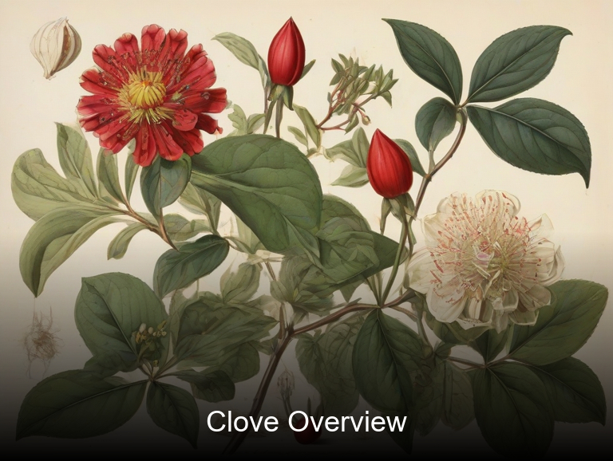
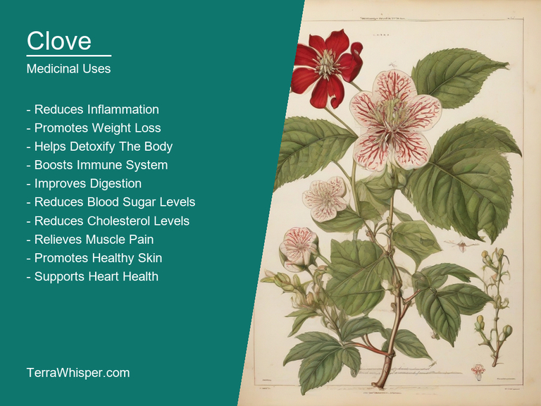
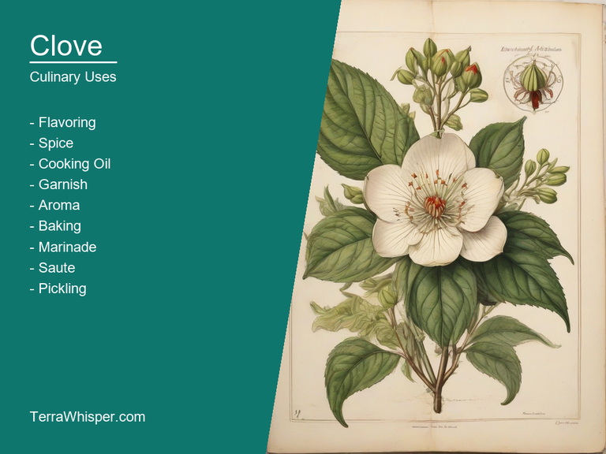
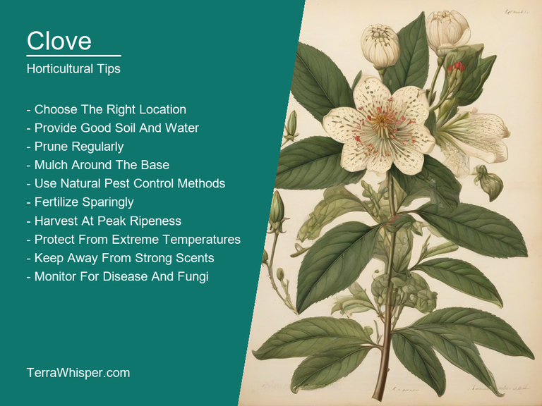
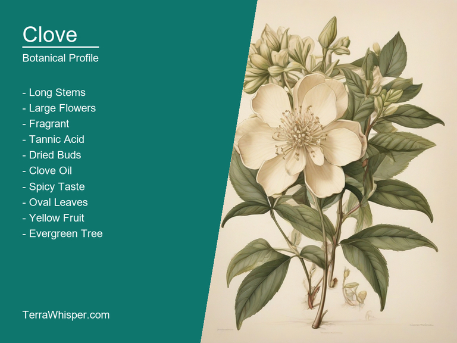
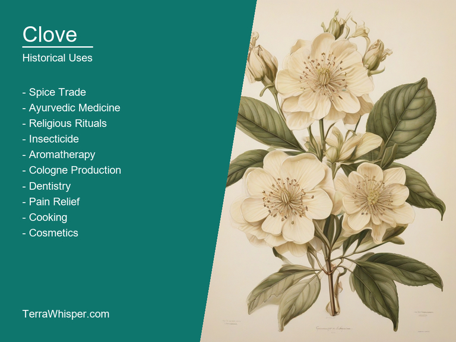

Clove, scientifically know as Eugenia caryophyllata, is a versatile plant with both medicinal and culinary benefits as well as providing beautiful ornamental value in horticulture. It has been widely used throughout history for its numerous health advantages and distinctive flavoring. In various cultures, cloves are incorporated into traditional remedies to treat common illnesses like coughs, colds, and digestive issues due to their antioxidant properties and ability to promote a healthy immune system.
As a culinary spice, the aromatic and warm flavor of cloves lend depth to many dishes, particularly those featuring meat or desserts. The plant's small flower bud is also a crucial component in creating mulled beverages and other festive drinks during the holiday season. Clove essential oil extracted from the plant has been used for centuries as a natural insect repellent and for improving dental health by reducing plaque and fighting bad breath.
In horticulture, clove's flowering branches are often cultivated in potted plants or as a part of landscape design to add an exotic touch to gardens. The plant's bright green leaves and striking pink flowers create a charming presence on any patio or in home decorations during warmer months.
With origins traced back to the Maluku Islands (now known as Indonesia), clove has been an important commodity for centuries, traded along ancient spice routes, which played a major role in shaping global trade and cultural exchange. Today, this remarkable plant continues to be cherished for its numerous benefits, making it an essential element across different areas of everyday life.
In this article, you will discover what are the medicinal and culinary uses of clove. Then, you'll learn how to cultivate it, what is its botanical profile, and how it was used historically.
Clove (Eugenia caryophyllata) has many health benefits, such as aiding in digestion, reducing inflammation, and acting as a powerful antioxidant which protects the body from damage caused by free radicals. This versatile plant is also known to help alleviate respiratory issues, dental problems, and even boost immunity. It has been used for centuries as a natural remedy in various cultures across the globe.
The following illustration lists the most important uses of clove in medicine.

The medicinal constituents found in clove include eugenol, eugenol acetate, and beta-caryophyllene, all of which contribute to its potent health benefits. These chemical components give clove its distinct aroma and taste while also providing antiseptic, antibacterial, analgesic, and antispasmodic properties.
The most commonly used parts of the clove plant include its dried flower buds and essential oil. These can be utilized in various forms such as capsules, tablets, teas, or even topical applications like ointments and balms. The essential oil extracted from cloves is highly concentrated and should always be diluted before applying directly on the skin to prevent any adverse reactions.
While clove has numerous health benefits and plays an essential role in traditional medicine, it's important to note that potential side effects may occur if not used correctly or with caution. These side effects can include allergic reactions, stomach discomfort, and mouth irritation when consumed in large quantities or with undesired food combinations.
To ensure safe usage of clove for medicinal purposes, it's crucial to follow certain precautions. It is advisable to consult a healthcare professional before using any herbal remedy, especially if you have existing health conditions or are taking medications. Additionally, avoid using clove oil in its undiluted form on sensitive skin and keep it away from children as it may pose potential hazards due to their developing nervous system. Lastly, ensure proper storage of cloves and essential oils in a cool, dark place to maintain their potency and prevent spoilage.
Clove, scientifically known as Eugenia caryophyllata, has been a popular spice used in various cuisines across the globe for its unique flavor and aroma. Its culinary uses range from seasoning dishes to enhancing baked goods and beverages. It is often used as an ingredient in Indian, Indonesian, Middle Eastern, and South Asian cuisine.
The following illustration lists the most common uses of clove for culinary purposes.

The complex, pungent, warm, and slightly sweet flavor profile of clove makes it a versatile addition to numerous culinary applications. The aroma is reminiscent of spicy wood with hints of citrus and floral notes. This unique taste adds depth and complexity to dishes, making them more appealing and memorable.
In the realm of edible parts, primarily its tiny flower buds are used in cooking. These cloves are harvested when they're still green but quickly dry out to their signature brown color. Once dried, these small, tapered buds are ground into a fine powder or left whole for use in various recipes.
When it comes to culinary tips, using clove as an essential spice requires precision, so avoid overdoing it. A little can go a long way in enhancing the flavors of your dishes. Cloves are commonly used to add depth to curry powders, chutneys, and pickling brines. They also pair well with other warm spices like cinnamon, nutmeg, allspice, and ginger.
Clove has been known for its potential side effects and toxicity in some cases. It is essential to avoid overconsumption or cooking the cloves for an excessive duration of time. Prolonged exposure to high heat can release harmful compounds that may cause irritation or other adverse reactions if consumed excessively. Additionally, people with specific allergies or sensitivities should be cautious when using clove in their recipes.
The growth requirements of clove plants include optimum conditions like partial to full sunlight exposure, humid and warm temperatures between 20-32 degrees Celsius, and well-drained, moderately moist soil rich in organic matter. Cloves are often cultivated as evergreen shrubs with heights reaching up to a couple of meters.
The following illustration lists the most important tips to cutlitvate clove.

Planting clove plants should be done during the rainy season or when there is sufficient water supply for proper establishment. Space them at least one meter apart, ensuring enough airflow and room for growth. Plant at depth twice their size and cover with soil to avoid disturbance of shallow roots during germination.
Caring tips include regular pruning to maintain shape, ensuring an even distribution of light across the plant. Watering should be frequent, especially during dry spells, but take care not to overwater or create soggy conditions. Apply fertilizers designed for flowering plants every three months and remove weeds that compete with cloves for nutrients and water.
Harvesting tips require close observation of flowers blooming. Flowers usually transform into buds after about two months before they fully mature into cloves. Cloves reach full size in around six to eight months, and harvest should occur once the outer shell appears crumpled while it retains flexibility when pressed with your finger.
Pests and diseases can threaten the well-being of clove plants. Common pests include aphids, scale insects, and mealybugs that feed on plant juices causing stunted growth or even death. Fungal diseases such as leaf spot, canker, and powdery mildew may also affect clove plants' health if left unchecked. Preventive measures like proper spacing, cleanliness, and timely intervention can aid in limiting damage.
Clove, with botanical name Eugenia caryophyllata, belongs to the domain Eukaryota, kingdom Plantae (or Viridiplantae), phylum Magnoliophyta, class Magnoliopsida (also known as Dicotyledonae or Dicot), order Myrtales, family Myrtaceae, genus Eugenia, and species caryophyllata. It is also called Laurel Tree Leaf Bud.
The following illustration display the botanical profile of clove.

There are several variants of clove with slight differences in their characteristics. For instance, Indonesian and Indian cloves have a different cultivation system which leads to varying shapes and sizes. Additionally, they might differ in the amount of eugenol content within their aromatic oils.
Clove trees are evergreen shrubs or small trees that can grow up to about 12 meters tall. The leaves are leathery, glossy, and dark green with a strong, distinctive smell. Cloves are the dried flower buds of these trees, which are picked when they're still unopened and green. They then turn a rust color before finally turning to brown, indicating they're ready for harvest.
Clove trees grow in tropical regions, predominantly found in countries such as Indonesia, India, Brazil, Sri Lanka, Tanzania, Madagascar, Mauritius, and Mozambique. They thrive in well-drained soil with a suitable temperature range of 15 to 30 degrees Celsius, receiving regular rainfall.
The life cycle of clove trees is typical for tropical plants. Seeds usually grow during the wet season, and the young plants can be cultivated in nurseries before being transplanted into the field. Cloves then form when buds are picked during a particular stage of growth and development. This harvesting process repeats annually.
Clove or scientifically referred to as Eugenia caryophyllata is a flowering tree which belongs to the Myrtaceae family. It has been used for many aspects by different cultures throughout history for various reasons, especially medicinally and in religious rituals. Its richness is known even today with numerous applications.
The following illustration lists the most well known historical uses of clove.

During historic times, clove was often used as a medicine to treat numerous ailments, particularly a toothache. The essential oil extracted from clove, which contains eugenol as the active ingredient, has strong analgesic and antiseptic properties. It's these qualities that were utilised in traditional medicine for relieving pain and preventing infections in wounds.
Aside from its medicinal uses, the versatility of clove was also used for divination purposes in different ancient civilizations, like China, India, and Indonesia. The practice of reading signs through observing patterns in nature or objects has been a part of human culture since prehistoric times, especially as a way to gain insights into the future. In this context, cloves were often used as a tool for predicting outcomes based on their shape, size, colour or behaviour. This would sometimes lead individuals to make crucial decisions about their lives and communities.
Lastly, legends surrounding clove have been passed down over time which highlight its significance in various traditions, superstitions, and beliefs. One such legend is the story of a young girl who was given a ring filled with cloves by a handsome stranger as a token of love. The ring was said to grant eternal life, and the girl's heart remained bound to this love despite numerous obstacles that came her way. This tale has been interpreted in different ways but generally serves as an example of how this simple yet valuable spice can be woven into cultural myths and folklore.
While clove might be primarily known for its culinary uses today, it's the depth and breadth of its historical relevance that truly showcases its significance in human culture throughout different epochs. From traditional medicine to divination rituals and legends, this spice has undeniably played a role in shaping beliefs, practices, and customs across diverse societies.